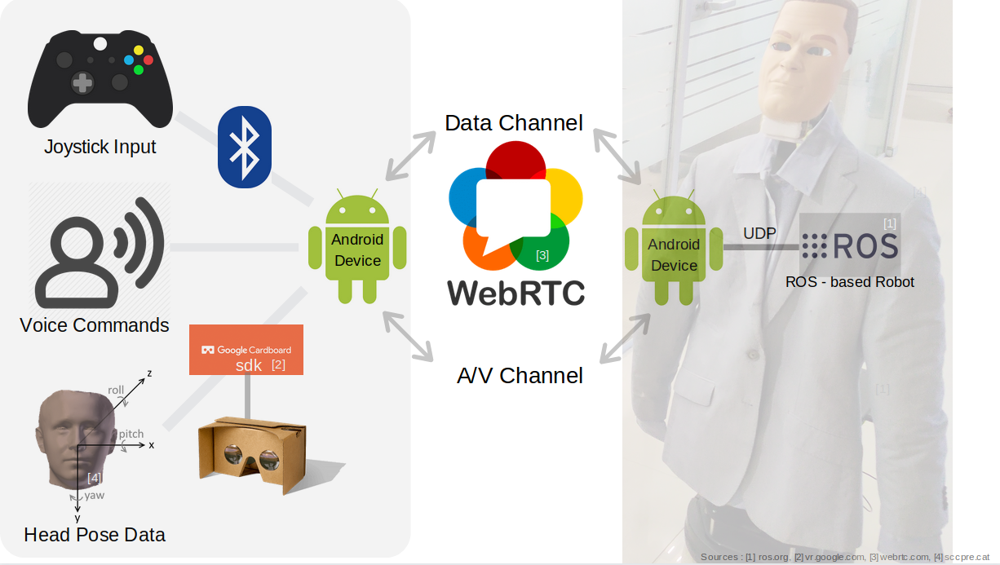

VR Present
Immersive framework for teleassistence, telepresence and remote surveillance.
Introduction
Tele-assistance systems enable a novice user to be guided by an expert remotely. On similar lines, tele-presence lets an avatar of him to be physically present in a remote environment to enrich experiences in addition to allowing control from a remote site. The application areas of the aforementioned systems include industrial inspection and repair in avionics, automotive, chemical plants, among others. With the wide spectrum of applications we see a rise in Tele-presence, Tele-assistance, remote surveillance systems as they reduce the travel time, turn around repair time, effort and money spent by a personnel. Additionally, these systems tend to solve the challenges even in the case of aging population of experts to travel long distances such as in power plant, oil rigs etc. Robotic Telepresence, particularly has witnessed a rise owing to the added value of navigating in the remote environment which otherwise may be harder for human, for instance, inspecting the interiors of a boiler in a power plant and certain areas of a oil rig.
Video
Architechture

Our system is entirely based on android and uses webRTC library for android to android communication. AppRTC's Audio and Video channel are used to transmit the Audio and Video data while the data channel is used to transmit head pose data, joystick data and other commands including the voice based commands. Joystick Inputs are understood using bluetooth and android's motion event class. Voice commands are understood using android voice to text and hence converted to relevant messages. Head Rotation data and rendering of video frames in VR and AR is done through the Google Cardboard SDK. Photo is captured by getting hold of the incoming video frame and it into a useable format. Various feedbacks regarding the button pressed, the mode switches are given by providing audio feedback using android text to speech library although other alternatives for providing feedbacks exist like. On the remote side, Android phone and laptop attached with turtlebot communicate through UDP and thus the android phone forwards various commands it receives from the AppRTC data channel to the laptop through UDP which then converts these into appropriate ROS messages which are used to control the robot.
Conclusions and Future Work

We presented VR Present, a frugal immersive framework for teleassistence,telepresence, and remote surveillance. Telepresence mode has various applications in monitoring and surveillance, as well as in meetings and presentations, while Teleassist mode has uses in the field of industrial training and repair tasks. Our work combines the best of both in the same application. Application is flexible, immersive , easy to use, and cost effective compared to the counterparts discussed. In future, we plan to extend our work by incorporating in device deep learning models for detecting user engagement in presentations, by using three dimensional audio for a more immersive experience and by incorporating sharing of virtual objects between the two sides in TeleAssist mode.